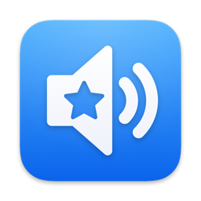

FAQ
PriAurity
Getting started
How do I set my preferred devices?
Click the speaker icon in the menu bar. PriAurity has separate lists for Output and Input. Drag a device by its ≡ handle to put it in the order you prefer. PriAurity uses the highest-ranked device that's connected, and switches again whenever devices connect or disconnect.
Where is PriAurity? It has no window or Dock icon.
PriAurity lives in the menu bar, as a speaker with a star on it. Click it to open your device lists and settings.
How do I start PriAurity when I log in?
Turn on "Launch at login" at the bottom of the PriAurity menu.
Switching devices
I picked a device in System Settings and it moved to the top of my list. Why?
When you choose a device yourself, in System Settings, Control Center or with "Use Now", PriAurity treats that as your new preference and moves it above the other connected devices, so your choice sticks. Devices ranked higher that aren't connected keep their places.
Why did PriAurity switch away from the device I was using?
A device ranked higher in your list connected, such as a dock or headphones. PriAurity always uses the highest-ranked connected device. Drag the device you want higher in the list, or pick it in Control Center, which moves it up for you.
My headphones connected and macOS switched to them. Will PriAurity switch back?
Yes, if they're ranked lower than the device you were using. If you want them to take over when they connect, drag them higher in the list.
How do I stop automatic switching for a while?
Use the switch at the top of the PriAurity menu. While switching is paused, the menu bar icon loses its sound waves. Turn it back on and PriAurity applies your list again.
Do alert sounds follow my output device?
With "Alert sounds follow output" turned on, macOS's alert and notification sounds play on the same device as everything else. Turn it off to leave alert sounds wherever you set them in System Settings.
Your device list
A device I've unplugged is still in the list
Unplugged devices stay in the list, greyed out, so they keep their place for next time. To remove one, right-click it and choose Forget Device.
My dock appears in the list twice
Some docks report a different identity when plugged into a different port. PriAurity recognises most of these automatically and keeps a single entry. If you still see a duplicate, right-click the greyed-out copy and choose Forget Device.
I have two identical monitors. How do I tell them apart?
Devices with the same name get a number, such as "Monitor (2)". The number stays with the device, so it moves with it when you reorder the list.
Volume and mute
How do I change a device's volume or mute it?
Each connected device with a volume control has a slider under its name and a mute button on the right. You can adjust any device, not just the one that's playing. For microphones, the slider sets the input level. Moving a slider also unmutes the device, like the volume keys.
Some devices don't have a volume slider
Many monitors and TVs connected over HDMI or DisplayPort don't let macOS change their volume, so PriAurity shows "No volume control". Use the monitor's own buttons instead.
My dock shows as muted but still plays sound
Some USB docks and audio adapters ignore a mute that's set while they're idle. macOS records the device as muted, but the hardware never receives the command, so once audio starts it plays anyway. PriAurity works around this by sending the mute again as soon as the device starts playing, so you may hear a split second of sound before it goes quiet.
If a device still plays while showing as muted, click its mute button twice to unmute and mute it again while it's playing.
The volume changed when I reconnected a device
With "Restore each device's volume" turned on, PriAurity puts back the last volume and mute you set for each device when it reconnects. Set it once and that level is remembered. Turn the option off if you'd rather macOS handled it.
Privacy
Does PriAurity listen to my microphone?
No. PriAurity chooses which microphone macOS uses and can set its input level, but it never opens a microphone or records, listens to or processes any audio.
Does PriAurity collect any data?
No. It doesn't connect to the internet and contains no analytics or tracking. Your device lists and settings stay on your Mac. Read the privacy policy.
Troubleshooting
PriAurity isn't switching devices
Check that the switch at the top of the menu is on, and that the device you expect shows as connected rather than "Not connected". If it still doesn't switch, quit PriAurity from its menu and open it again.
How do I start over with a fresh device list?
Quit PriAurity, then move this folder to the Bin:
~/Library/Containers/com.supermatt.priaurity. The next time you open PriAurity it
starts with your current devices in their current order.
Something else isn't working
Report a problem and include your macOS version and the audio devices involved.